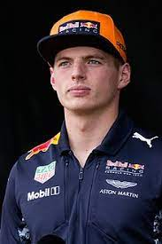

max verstappen
presentation
Max Verstappen né le 30 septembre 1997 à Hasselt,
est n pilote automobile néerlandais, champion du monde de Formule 1 en 2021.
Fils de l'ancien pilote Jos Verstappen, il fait ses débuts en Formule 1 en 2015,
au sein de la Scuderia Toro Rosso. Il est à 17 ans et 166 jours,
le plus jeune pilote de l'histoire à prendre le départ d'un Grand Prix et devient ensuite,
en Malaisie, le plus jeune pilote à marquer des points
palmares
- Saison Ecuries Cl. Pts. GP. Vict. Pol. Pod. Ab.
- 2022 Red Bull Racing 1 335 16 11 5 13 2
- 2021 Red Bull Racing 1 395 22 10 9 18 3
- 2020 Red Bull Racing 3 214 17 2 1 11 5
- 2019 Red Bull Racing 3 278 21 3 3 9 2
contact